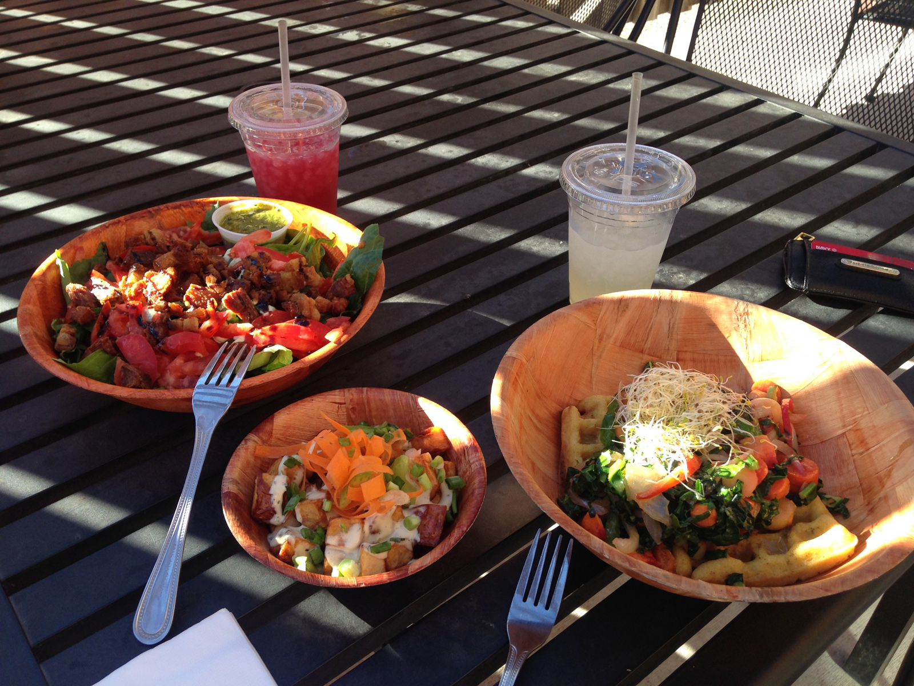
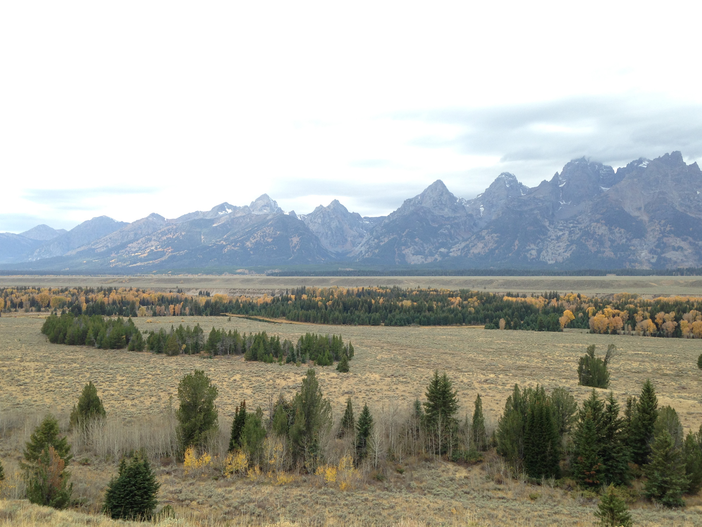
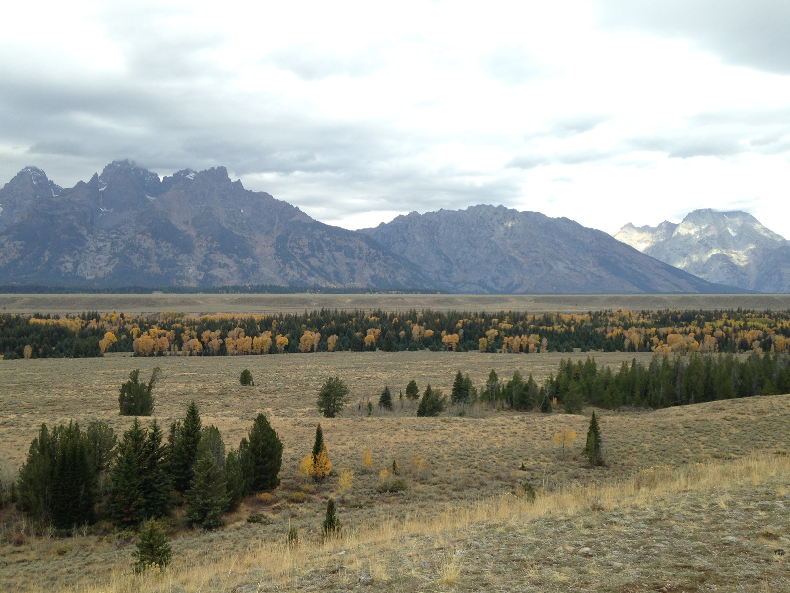

On Day 26 we crossed back into the US. We felt like we were speed racers driving above 50 mph for the first time in weeks. We stopped in Whitefish Montana to refuel and were pleasantly surprised by the hospitality and fantastic fresh food available there.
For the first time on the trip we felt like we were racing the clock. We drove all the way through most of Montana on day 26 and spent the night near Butte Montana in the Humbug Spires area. This area is known for its unique quartz towers such as this one visible from our campspot.
Grand Teton National Park WY
Days 27, 28, and 29 were actually spent in Idaho and Wyoming. We met up with some folks from Colorado who now call Victor Idaho home. They were kind enough to show us the famous Teton Pass Trails. These were some of the first one-way mountain bike only trails in the country and they are gnarly yet incredibly fun. Thank you Teton Freedom Riders for all your hard work!

Unfortunately we did not get to ride the high alpine trails in the area due to an early season snowfall. We woke up to freezing cold rain on day 29, realized we wouldn't be able to ride, and decided to start the long drive back to CO.

We took the scenic route home through Grand Teton National Park and the Wind River Reservation. We were not in a hurry to get back to the daily grind.